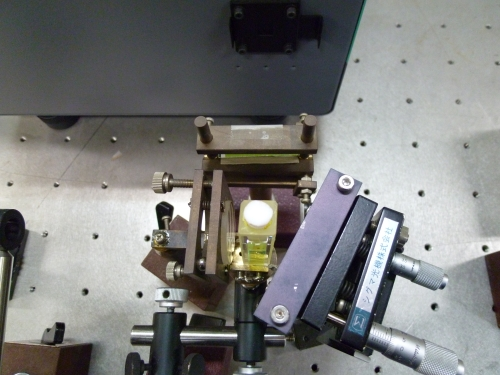

Research topics
We are investigating measurement methods based on spectroscopy.
High Temperature Plasma Diagnostics by High Dynamic-Range Spectroscopy

FIG.1 left: A schematic illustration of a high temperature plasma generator, LHD.
right: A large dynamic-range spectrometer developed by our lab.
FIG.1 left: A schematic illustration of a high temperature plasma generator, LHD. right: A large dynamic-range spectrometer developed by our lab.
In corporation with National Institute for Fusion Science, we study high temperature plasmas generated in Large Helical Device (LHD, depicted in figure 1 left).
In LHD, hydrogen atoms are heated over 10 million degrees and ionized into electrons and protons.
Such a state of the gas is called as "plasma".
During the ionization of atoms, they emit light.
From the observation of the light, we study the dynamics of the hydrogen atoms in the high temperature plasma.
Our specialty is a measurement by developing a new instrument with high-specification.
Figure 1 right shows a picture of a high dynamic-range spectroscopic system developed in our lab.
Figure 2 shows the Balmer-α line profile observed for an LHD plasma.
It is noted that the vertical axis is logarithmic.
Thanks to the high dynamic-range of the instrument, the simultaneous observation of the line center and wings whose intensity is over 103 times smaller than the peak intensity has been achieved.
The solid curves in the figure show the results of a hydrogen transport simulation.
From the study, we found the emission from the few neutral hydrogen atoms exist in the very high temperature regions, which have been considered to be unable to be observed [1,2].
Now we are working toward the much higher dynamic-range and the higher time-resolution measurements and also proposing the above technique as a new diagnostic method for high temperature plasmas.

FIG.2 A Balmer-α line profile observed for an LHD plasma. Vertical axis is logarithmic. The results of simulation are shown by solid curves.
[1] M. Goto, K. Sawada, K. Fujii et al., Nucl. Fusion, 5151 023005 (2011)
[2] K Fujii, T. Shikama M. Goto et al., Phys. Plasmas, 20, 012514 (2013)
Development of a wide-band and high-resolution spectrometer and observation of impurity emission lines in fusion plasmas

Fig. 1 Left: The echelle spectrometer we developed. Right: A focused image of white light. The decomposition against the wavelength can be seen.
Fig. 1 Left: The echelle spectrometer we developed. Right: A focused image of white light. The decomposition against the wavelength can be seen.
Impurities such as tungsten affect the stability of plasmas in fusion devices.
However, there still remain many uncertainties about the atomic structure of tungsten.
Accumulation of the atomic data is imperative.
As a collaboration with National Institute for Fusion Science (NIFS), we developed a wide wavelength range and high resolution echelle spectrometer.
A schematic illustration is shown in the left part of Fig.1.
The right part shows a focused image of white light decomposed against the wavelength (i.e. the color) of light by the spectrometer.
Recently, we have measured the emission spectra of tungsten in the fusion device with the echelle spectrometer.
We have succeeded to find emission lines of tungsten that have not been previously reported.
Now, we are making a detail analysis of the measured data obtained voluminously and improving the echelle spectroscopy system toward higher resolution and higher throughput.
Investigation of Electron Dynamics in ECR Plasmas by Polarization Spectroscopy of Lithium Atom Emission

Fig.1 Left: ECR discharge device with a cusp magnetic field and thermal lithium atom beam source. Right: Observed spatial distributions of intensity and polarization of lithium atom 2s-2p emission.
In order to understand detailed mechanism of tokamak plasma startup by electron cyclotron resonance (ECR) heating, we are developing a diagnostic technique to measure the electron velocity distribution function and its anisotropy in the plasma with spatial and temporal resolutions; the anisotropy can be deduced from the polarization of emissions induced by anisotropic electron-impact excitation. We have developed a thermal lithium atom beam source and observed polarization of lithium atom 2s-2p emission from the injected beam into an ECR plasma with a cusp magnetic field [1].
[1] T. Nishioka, T. Shikama, S. Nagamizo, et al., Rev. Sci. Instrum. 84, 073509 (2013).
Diode laser absorption spectroscopy of atmospheric-pressure micro-plasmas

Atmospheric-pressure plasmas have been attracting more and more attention because of their possibility of various applications, for example waste treatment, nano-particle formation, thin film deposition, plasma welding and cutting.
However, their plasma parameters such as gas temperature, electron density and temperature, … etc. have not been well examined.
Atoms and molecules absorb light with specific frequencies. The absorption spectroscopy utilizes this phenomenon.
Here we consider that a laser beam passes through a micro-plasma, as shown in Fig.2.
The intensities of the incident and transmitted beam through the micro-plasma are observed by a photo detector.
By sweeping the laser frequency, relations between the intensities and the frequency are obtained (Fig. 3).
The left and bottom axis of Fig.3 show the intensities and the frequency shift of the laser, respectively.
The intensity of the transmitted beam falls rapidly near the specific frequency.
This shows that the light with specific frequency is absorbed by the micro-plasma.
The absorption profile depends on the gas temperature and the electron density of the plasma.
We are developing a method to determine such parameters by analyzing such absorption profile.
Observation of collision processes in plasma by laser induced fluorescence

Fig.1 A subnano-second pulse laser
Fig.1 A subnano-second pulse laser
An observation technique of fluorescence from atoms excited by laser is called laser induced fluorescence. We are investigating atomic collision processes by laser induced fluorescence with nano- or subnano-second pulse laser (Fig. 1).
Recently, we have observe the rates of the disalignment and excitation transfer processes of the excited rare gas atoms by atomic collisions.